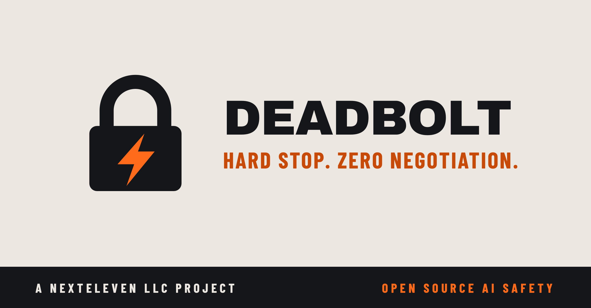

AI agents can write files, call tools, spend money and reach other systems. Deadbolt gives the trusted software around an agent a place to say allow or stop before each protected action runs.
Meet DeadBolt on Product Hunt. Follow the launch and share your feedback.
Designed, built and released under Apache-2.0 by NextEleven LLC. Open source, without a license fee or an intention to profit from Deadbolt itself.

01 / THE CONTROL POINTINTENT ≠ PERMISSION
WATCH / LEARN / VERIFY
See the boundary hold.
Start with the overview, then follow the complete developer walkthrough—from installation and integration to approval, revocation, recovery and real tool execution inside Harness.
Overview: the execution boundary, exact-action approval, actual Harness terminal and web UI, and how to start a bounded pilot.
English captions are always visible. No sound is needed. Narration uses the AI-generated Cedar voice. Harness runs its actual optimized binary with a deterministic local demo provider; the dispatcher and file-effect checks are real. Slides explain the system; they are presentation assets.
The faster the agent, the more important the boundary.
Teams are giving agents access to tools that change real state. A prompt can ask for restraint; it cannot enforce a stop if the executor keeps running. Deadbolt puts a local decision in the dispatch path, where a denied action can be withheld before the tool body starts.
It is designed for the moment after an agent proposes an action and before trusted code performs it. Policy, a short-lived lease, one-shot operator approval and revocation all meet at that point.
02 / THE MECHANISM
One gate. Every protected dispatch.
01
Agent proposes
A tool call, spawn, destination or spend-bearing action.
→
02
Deadbolt decides
Trusted dispatcher checks lease, policy and operator state.
→
03
Executor acts—or stops
Only an explicit allow reaches the protected body.
ALLOW → execute nowDENY / ERROR → no protected dispatch
This is an integration boundary, not a magic network shield. The trusted executor must route every protected action through it and must not cache an earlier allow. Pause and kill affect subsequent admission; they do not cancel a tool body already running.
03 / CHOOSE YOUR PATH
Start where your responsibility sits.
FOR DEVELOPERS & ENGINEERS{ }
Put a real stop in the dispatch path.
Review the trust boundary, download the stable v1.0.3 native archive, run the local file-effect evaluation and choose embedded Rust, local HTTP or a trusted stdio MCP proxy.
An agent can make a good recommendation and still have too much power. Deadbolt gives the team a technical point where permissions can be limited and later actions can be stopped by an operator.
Use the stable engine for the established gate. Choose the prerelease when you need exact-action review or scoped workload credentials. The bundle and engine have separate version numbers.
Which installation route should I choose?
Route
What you get
Start here
Local MCP bundle 1.1.0
Stable engine v1.0.3, prebuilt binaries and a Node.js launcher. For compatible local MCP clients; Node.js 20+ required.
Adds exact-action approvals, scoped admission credentials, dispatch helpers, a Python wheel and the optional Python OpenAI Agents SDK adapter. Not included in the MCP bundle.
Standard-library client and optional OpenAI Agents SDK adapter. Python 3.9+ for the base wheel; 3.10+ for the SDK extra. Install engine v1.1.0-rc.1 separately.
Download the archive and its checksum for your platform. Verify it, extract it and run deadbolt drill. A prebuilt binary needs no Rust toolchain, model key, cloud account or database server.
macOS arm64 and Intel archives are signed and notarized. Linux and Windows binaries are unsigned. Linux x64 requires glibc; ARM Linux, ARM Windows and Alpine/musl binaries are not included.
Cargo builds the stable release from crates.io. Rust 1.85+ and a native compiler for bundled SQLite are required. Expected output: deadbolt drill ok. No registry account is needed.
Embed it in your Rust application:
deadbolt = { package = "n11-deadbolt", version = "=1.0.3" }
Stable v1.0.3 provides Python and Node clients as source files. The Rust library and CLI are on crates.io. The prerelease Python client is on PyPI; its engine is installed separately. Stable Python and Node clients remain versioned source files; Node is not on npm. Set an explicit policy: an unset policy is open. Keep operator authority out of agent-controlled code.
BUILD IN / BOLT ON
Meet your application at its tool boundary.
Choose the route that fits your executor. Each protected effect needs a fresh decision immediately before its body runs. These guides include runnable examples and the limits of each integration.
STABLE + PRERELEASE
Embedded Rust
Add the version-pinned Cargo library to your executor. No sidecar is needed. Stable supports admission before the effect; the prerelease adds callback dispatch helpers.
Use the standard-library source client with the local engine. The prerelease also provides an installable wheel and synchronous and async effect wrappers. Install the engine separately.
Copy the CommonJS client into trusted application code. It uses built-in Node modules and the local HTTP service. Prerelease dispatch helpers support synchronous and async callbacks.
Run a local sidecar and implement the documented JSON protocol. Use matching private state paths and local authentication. Errors, malformed responses and missing explicit allow must stop dispatch.
Launch a trusted downstream server through the proxy, or configure the desktop bundle. It gates routed tools/call; child startup and other MCP methods remain outside the gate. HTTP/SSE MCP is not supported by this proxy.
Apply protected_tool to actual Python function bodies. Requires engine v1.1.0-rc.1 and the optional Python extra. Tested with openai-agents==0.23.1; hosted tools and an entire agent are not automatically covered.
Before expanding coverage, prove one real effect. Run the file-effect evaluation, then reproduce allowed work, policy denial, revocation, lease expiry and gate outage inside your own application. The allowed file must exist; the denied file must not. A working setup connection alone is not evidence of protection.
04 / EXECUTIVE BRIEF
A kill switch is only useful if it is wired to the machinery.
Picture an agent that can update customer records, move money or deploy code. If a human says “stop,” a chat message is a request. A gated dispatcher is a control: the next protected action must be admitted, and a revoked identity is denied.
Deadbolt can narrow the set of permitted tools and destinations, set caller-supplied spend caps, require a one-time human approval for classified irreversible actions, and record structured decisions. Teams choose what to protect and integrate the gate into the code that actually performs those actions.
THE BUSINESS QUESTIONWhen an agent is wrong, what can it still do before a person takes control?
05 / THE FAILURE MODES
The incidents to design for before they occur.
01
Runaway permissions
An agent with broad tool access can act beyond the task it was given. Put an explicit allow-list at the action boundary and deny off-policy calls.
02
Compounding mistakes
A bad plan can repeat across many calls. Short leases and operator pause or kill can prevent subsequent protected actions for an identity and registered descendants.
03
Cost and destination drift
Agents can keep spending or reach unplanned destinations. Trusted callers can supply spend and destination context for policy checks; Deadbolt does not measure bills or intercept traffic itself.
04
Approval theater
A prompt saying “ask first” is not an approval system. Deadbolt can require a one-shot operator grant for tools the team classifies as irreversible.
These are engineering scenarios, not claims that Deadbolt has prevented a customer incident. The protection is only as complete as the actions routed through the gate.
The v1.0.3 release includes source, native archives for four OS/architecture targets, checksums, reproducible evaluation material and an Apache-2.0 license. Its published Apple Silicon archive passed eleven local file-effect checks from the extracted ZIP. Linux, macOS and Windows CI plus the selected Hermes MCP route passed on the reviewed source.
Bundle 1.1.0 also records 25 installed-bundle acceptance cases per host across macOS ARM64, macOS Intel, Linux x64 and Windows x64. Its VALIDATION.md and validation/ reports include the tested setup and configured modes. Claude Desktop graphical setup and configuration switching were checked on macOS ARM64; other graphical clients have not been tested.
That is a tested release and a reproducible demonstration. It is not an independent security certification, a universal containment guarantee, or proof of adoption in someone else’s production system.
Review the proposed content and context, consume a grant once, and refuse changed or replayed requests. Scope workload admission credentials separately from operator controls. These features are included in v1.1.0-rc.1.
Download a native archive and the Python wheel from the prerelease. Follow runnable Rust, Python, Node, MCP and optional OpenAI Agents SDK examples. The wheel does not bundle the executable. Select 1.1.0-rc.1 explicitly on crates.io for the Rust library/CLI. Pin n11-deadbolt-client==1.1.0rc1 on PyPI for the prerelease Python client. Node remains a source client.
The separately reviewed Harness update rechecks immediately before the protected effect. Declined review does not consume a one-shot grant. Changes to policy or leases during review are covered by regressions. The correction is merged in Harness source. The linked review and tests describe that change; verify the version you install separately.
Published prerelease source: 52a2085. All 21 release payloads were downloaded and checked against the published SHA256SUMS. Both macOS archives are signed and notarized; Linux and Windows binaries are unsigned. Source and packaged acceptance checks passed on the tagged source. Download the prerelease and inspect its validation. Stable v1.0.3 remains available above.
Local verification at the pinned revisions: 96 DeadBolt Rust tests, 19 installed-SDK checks, and 825 Harness workspace tests. The walkthrough contains 14 candidate checks, the 11-case file-effect evaluation, and actual Harness allow/deny effects. Passing tests support these specific checks; they do not establish universal containment or certification. Pinned revisions and boundaries.
OPERATE / EVALUATE / GET HELP
A clear path beyond installation.
Operate deliberately
Own policy, run identities, private state, backups and incident recovery outside the agent.
Does DeadBolt need a model API key or cloud service?
The native gate and local file-effect evaluation do not require a model account, API key or hosted service. Your agent application may have its own provider requirements. The base Python client has no third-party runtime dependencies; the SDK adapter is optional.
Does installing the MCP bundle turn protection on?
With the operator configuration left blank, it exposes only read-only setup and bundle-integrity tools. It does not start or protect a downstream server. Configure a private operator JSON file with the trusted server, an explicit policy and a run identity, then verify the actual allowed and blocked effects. The bundle guide explains lease expiry and using a fresh identity for a new run.
Does it sandbox or stop the whole agent?
It gates actions routed through trusted dispatchers. It does not isolate the operating system, intercept arbitrary network traffic or cancel a tool body already running. The dispatcher, downstream server, state ownership and complete routing remain part of your trusted integration. Operator controls must stay outside model tools.
Is DeadBolt free to use in commercial applications?
DeadBolt is licensed under Apache-2.0 with no license fee. Inspect the license and included dependency notices. Your own hosting, client subscriptions and model-provider usage are separate. Listing in a catalog does not require buying an optional promotion or verification plan to download the GitHub release.
Where should I ask about integration or report a problem?
Open a GitHub issue with the version, OS, route and a minimal reproduction using dummy data. Follow the security reporting policy for sensitive reports. Keep keys, private review content and operator configuration out of public issues.
FIND / TRY / DISCUSS
Explore it where you already work.
GitHub releases are the direct download source. These additional routes offer catalog metadata, a demonstration or a place to discuss the project; they are not independent security certifications.
Smithery
Find the local MCP bundle listing and its installation information.
Built in the open for the people carrying the risk.
NextEleven LLC designed, developed and built Deadbolt, then released it under Apache-2.0 so teams can inspect it, adapt it and use it without a license fee. We do not intend to profit from Deadbolt itself. The aim is a practical contribution to safer AI in business and more confidence for the engineers asked to put agents into real systems.
Landing page reviewed October 11, 2026. The walkthrough was recorded October 10; release and merge updates are explained alongside it. Open source is a starting point for scrutiny, not a substitute for it. We welcome careful evaluation, issues, improvements and honest reports from the field.